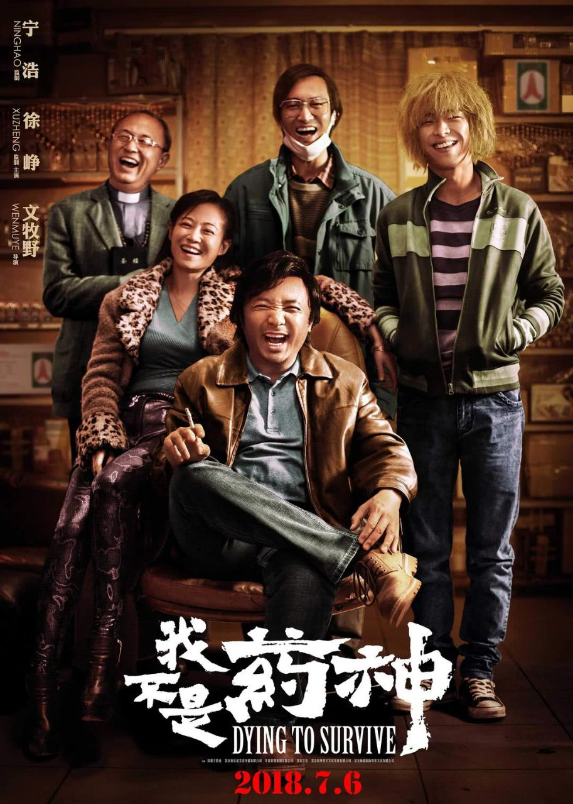
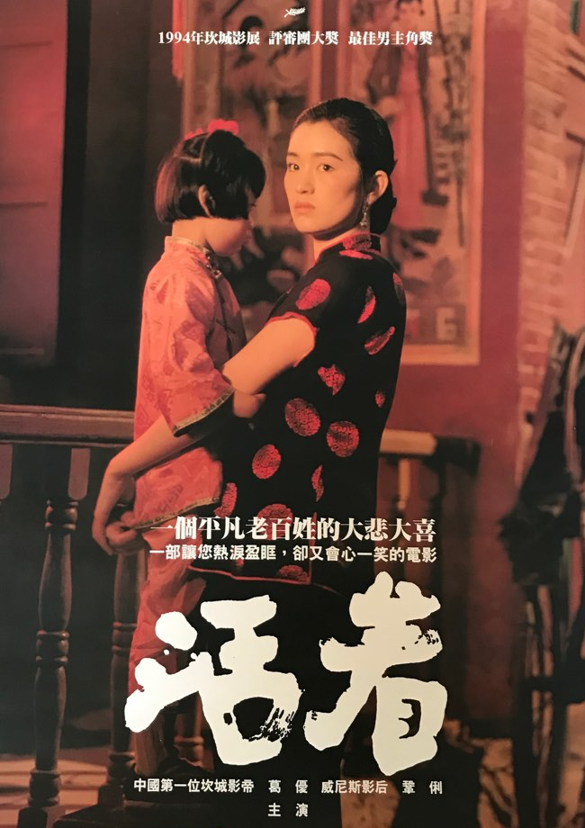
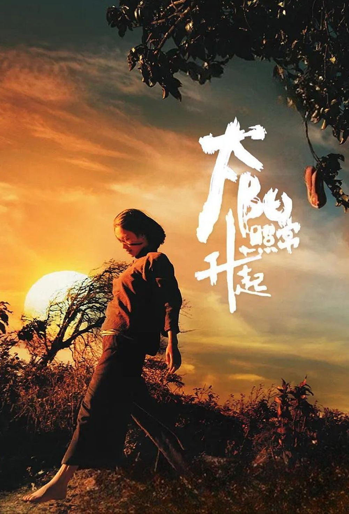
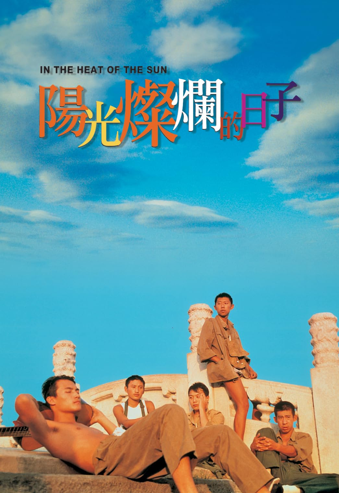
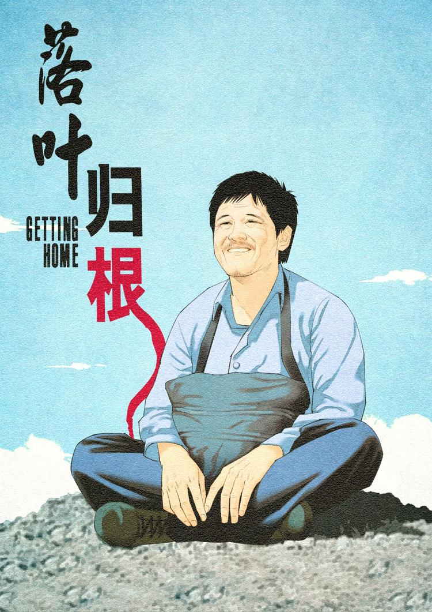
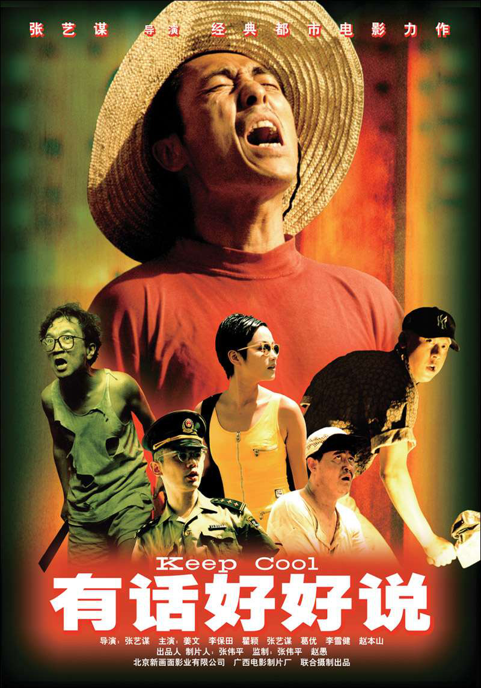

Recomendaciones de Películas Nativas
Una pequeña colección de películas chinas formidables con las que estudiar el idioma. Todas joyas nativas con las que acercarse más a la cultura y sus infinitos matices.

我不是药神
No soy el Dios de la medicina
2018 - Wen Muye (文牧野)
Basada la historia real de Lu Yong (陆勇), un paciente de leucemia chino que traficó con medicamentos genéricos y baratos contra el cáncer obtenidos en la India, ayudando a más de mil pacientes chinos afectados por la enfermedad y sus enormes costes económicos.

活着
¡Vivir!
1994 - Zhang Yimou (张艺谋)
Fugui, un hombre adinerado que lo pierde todo por el juego se ve arrastrado a la guerra civil china y, al regresar, acaba como campesino pobre. A través de su vida y la de su familia, la película muestra el paso de la China tradicional al régimen comunista y cómo estos cambios se mezclan con la dureza, el hambre y las pérdidas de la vida cotidiana.

阳照常升起
También sale el sol
2007 - Jiangwen (姜文)
Un poema ohnírico sobre varias historias entrelazadas: un hijo que lidia con su madre loca en un pueblo de Yunnan, dos amigos atraídos por la misma mujer en una universidad del este, y un cazador que abandonó su vida en el desierto del Gobi.

阳光灿烂的日子
Días de sol
1994 - Jiangwen (姜文)
Mientras adultos y padres (muchos de ellos oficiales del ejército) están ausentes o concentrados en la agitación política de la Revolución cultural de Pekín, un grupo de adolescentes queda libre de toda supervisión durante un verano interminable, marcado por una luz dorada y un calor sofocante.

落叶归根
Regreso a casa
2007 - Zhang Yang (张扬)
Un trabajador migrante se compromete a llevar a casa el cadáver de un compañero que ha muerto en un accidente, pero el viaje resulta mucho más complicado de lo esperado. Entre encuentros y personajes disparatados y todo tipo de contratiempos, hará lo imposible por cumplir su promesa y conseguir que su amigo vuelva a casa.

有话好好说
Keep Cool
1997 - Zhang Yimou (张艺谋)
Un vendedor ambulante se obsesiona con vengarse del escritor que dejó a su novia y publicó una novela basada en su historia. Su búsqueda de venganza se convierte en una sucesión de situaciones absurdas, discusiones y malentendidos, mientras el protagonista intenta recuperar el amor perdido y ajustar cuentas a su manera.
让子弹飞
Que vuelen las balas
2010 - Jiangwen (姜文)
Un bandido se hace pasar por gobernador para quedarse con el dinero de un pueblo, pero allí se encuentra con un poderoso comerciante local dispuesto a desenmascararlo. Entre tiroteos, traiciones y engaños cada vez más frenéticos, ambos libran una partida de poder en la que nadie parece ser quien dice ser.